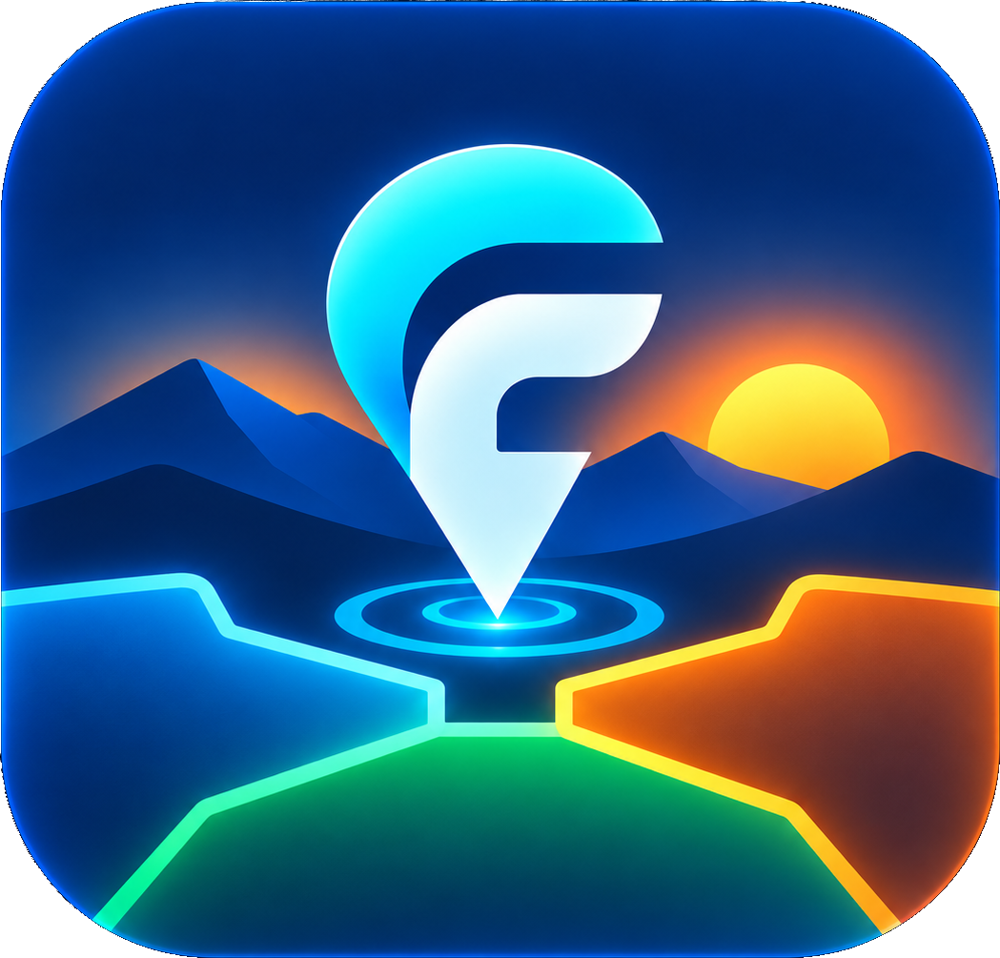

ESTUDIO INDEPENDIENTE · REALIDAD AUMENTADA
Otra forma de mirar.
El mismo mundo.
Exploramos cómo la tecnología puede ayudarnos a entender lo que tenemos delante. Nuestro primer paso: hacer visible el territorio con FronteAR.
Descubre FronteAR
01 / NUESTRA PRIMERA APP
FronteAR
En pruebas · AndroidEl paisaje no termina donde acaba un municipio.
Descubre los límites municipales y los núcleos cercanos sobre la vista de la cámara. Cambia al mapa orbital y explora las zonas que ya tienes guardadas.
- RA Límites y núcleos en tu entorno
- MAPA Tus zonas, de un vistazo
- OFFLINE Reutiliza los datos descargados
FronteAR está disponible mediante invitación para testers autorizados en Google Play. El primer lanzamiento se dirige a personas de 16 años o más. La próxima actualización incorporará fotografías del terreno opcionales; todavía no está publicada.
Privacidad de FronteARCobertura inicial: España. Las indicaciones son orientativas; no sustituyen cartografía oficial ni sirven para navegación de seguridad.
HABLEMOS
Las buenas ideas
empiezan conversando.
Consultas sobre el estudio, FronteAR o las pruebas:
abjuanlu@gmail.comNo envíes contraseñas, documentos de identidad ni ubicaciones privadas innecesarias.